Drupal.org Workflows
About me
- Sascha Grossenbacher
- MD Systems
- https://drupal.org/u/berdir
- Entity system maintainer
- Contrib maintainer: TMGMT, Paragraphs, Token, Pathauto, Redirect, ...
- Contributing to Drupal since ~16 years
Topics
- Issues
- Patches & Merge Requests
- Gitlab CI
- Release Management
Disclaimer
- Personal opinions ahead
- Not all maintainers work in the same way
Issues & Metadata
Overview
- Issues use nodes and comments
- The node holds the issue metadata, updated through comments
- Mostly used to track code changes, consider using Slack, Forums, Drupal Answers, ... for support
- Different rules for Drupal core vs. contributed projects
Title
- Short, compact description of the problem/feature
- Usually becomes the commit message if issue results in a code change
Priority
- Only change to Major/Critical according to the rules
- Importance of the issue to the project, not to you
- d.org/docs/develop/issues/fields-and-other-parts-of-an-issue/issue-priority-field
Status
- Active: New issue, no work done yet
- Needs review: Patch/MR ready for review/testing
- Needs work: Updates needed after testing/reviewing
- Fixed: Set by maintainer after committing. Automatically changed to Closed (Fixed) after 2 weeks
- d.org/docs/develop/issues/fields-and-other-parts-of-an-issue/issue-status-field
Version
- Always pick the development version/branch
- Contrib: Check project page when not sure
Version (Drupal Core)
- Development in 11.x branch (=main branch)
- d.org/about/core/blog/new-drupal-core-branching-scheme-introduced
- As of a few days ago, 10.3.x now exists as a separate branch
- Almost every issue should still target 11.x, will first be committed there
Tags
- Only standardized, documented tags should be used
- Common are for example Needs X, like Needs tests
- When in doubt, ignore
- drupal.org/node/3156530
Component
- Drupal Core has component maintainers, so picking a matching component is important.
- Sometimes hard to find a good component, others will improve if necessary
- Most contrib projects barely use components
Assignee
- Only maintainers can assign someone else than themselves
- Only assign to you if you are actively working on the issue, unassign when done
Issue summary
- Use the template as much as possible
- Most important: Problem/Motivation, Steps to reproduce for a bug and proposed resolution.
- Updating issue summary of a large issue with many comments is a useful contribution!
Outlook
Issues will move to Gitlab
Patches & Merge Requests
Patches
- Describe changes to source files
- Each patch contains full set of changes against the target branch
- Interdiff (diff between two patches) used to document incremental changes
Collaboration process with patches
- Patch uploaded as an issue comment
- Review posted with requested changes
- Updated patch + interdiff uploaded as a comment
- Repeat until committed
Uncommon aspects on drupal.org
- Often multiple developers contribute code to a single issue (5.6 average contributors per core issue)
- Custom tools like Dreditor
- Same basic workflow persisted for a very long time, while code versioning changed from CVS to Git to Gitlab
- High adoption of using patches in website projects (committed, drush make, composer patches)
Merge Requests (Pull Requests on Github)
- Slow shift to merge requests, soon enforced due to DrupalCI/GitlabCI changes
- Similar basic process, but more structured
- Based on a git branch (patch) and commits (interdiff)
- Standard contribution process for many open source projects
- Easier to learn for non-Drupal developer and non-developer contributors
Limitation of Merge requests
- Merge requests commonly assume a single developer/team
- Non-maintainers initiate process by creating a repository "fork" in their own name.
- Fork is owned by them, only they can commit
Merge requests on drupal.org
- Custom process developed for drupal.org: shared issue forks
- First contributor requests an issue fork. Everyone can get push access, automatically granted
- Some restrictions still apply: changing merge request target, resolving review comments
- Gitlab is working on a similar concept called Community forks
Create issue fork

Issue Fork info
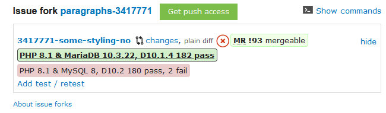Issue Fork Commands
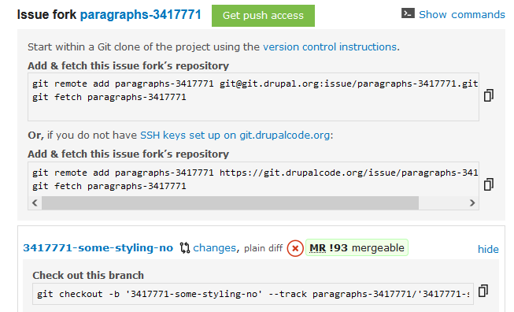Merge request UI
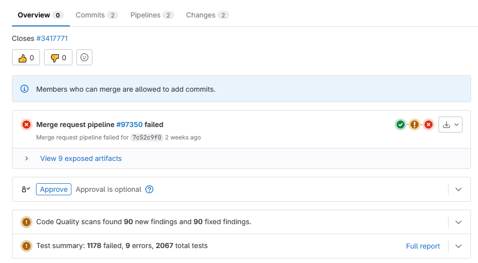Merge request Code review
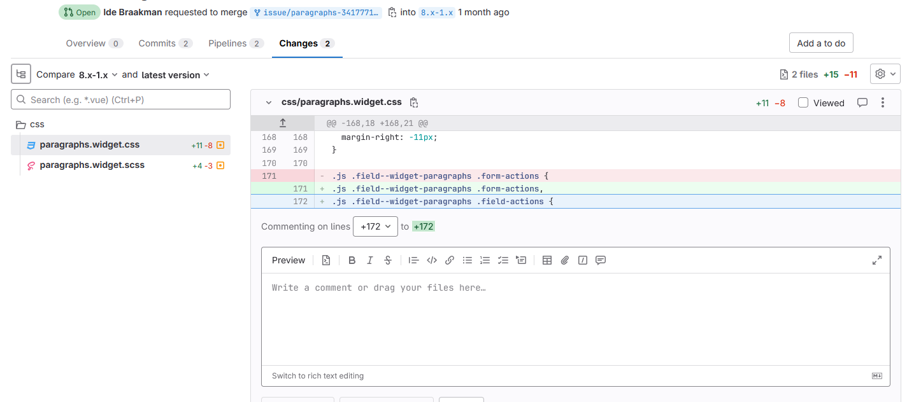Using patches in your composer project
- https://github.com/cweagans/composer-patches
composer require cweagans/composer-patches
Recommended composer.json settings
"extra": {
"enable-patching": true,
"composer-exit-on-patch-failure": true,
"patchLevel": {
"drupal/core": "-p2"
},
"patches": {
"drupal/core": {
"ISSUE-NR: DESCRIPTION": "PATCH-URL-OR-FILENAME",
}
}
// OR
"patches-file": "composer.patches.json",
}
Merge requests as patches
curl -o patches/PROJECT-ISSUENR-description.patch \
https://../merge_requests/5636.diff
Important!
- Do NOT use MR.diff URL directly. Remote Code Execution!
- Use .diff, not .patch (patch is a list of commits in a single patch)
Work on a merge request in your project for a contrib module
composer reinstall drupal/PROJECT --prefer-source
cd web/modules/contrib/PROJECT
git remote add ...
git fetch ...
git checkout ...
...
git commit && push
# Open Merge request (verify target branch), update issue
Drupal CI to Gitlab CI
Drupal CI History
- Several iterations, initially called PIFT (Project Issue File Test), around 2007
- Modernized around 2014 using Jenkins, Docker Containers to support different PHP and databases versions
- Limited flexibility
- Now deprecated, replaced with GitlabCI
Gitlab CI
- Standard Continuous Integration system of Gitlab
- Does not support patches!
- Pipeline: A set of jobs
- Jobs: Set of commands, runs in a container, can use N service containers (MySQL, Redis, ...), dependencies
- Scalable, runs on Kubernetes
- Infrastructure provided by Drupal Association, pretty expensive, consider what pipelines are really needed
.gitlab-ci.yml
- Configuration is a in in a file in the project
- For DrupalCI, only maintainers could make test configuration changes, through the drupal.org UI, new branches required new configuration
- Contributors can make adjustments/recommendations, maintainers can then merge that
Documentation
Add and use default template
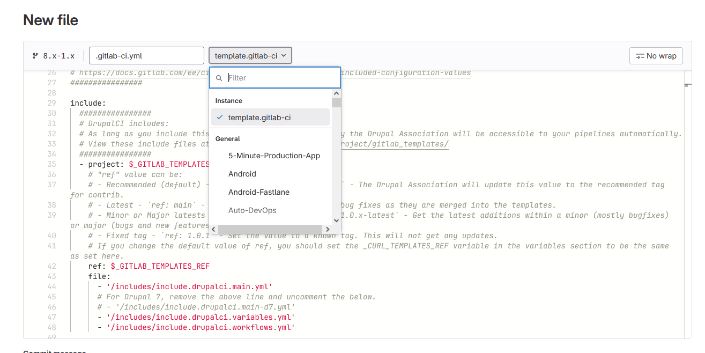Default pipeline
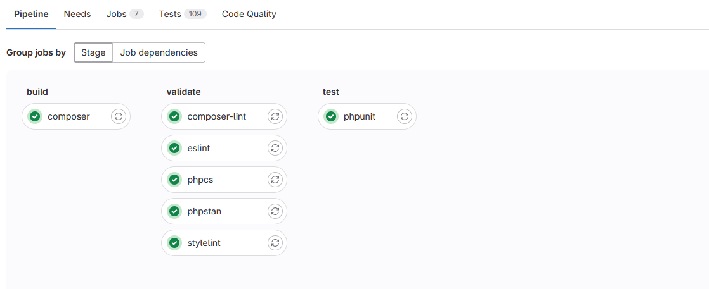Investigate fails: Test results
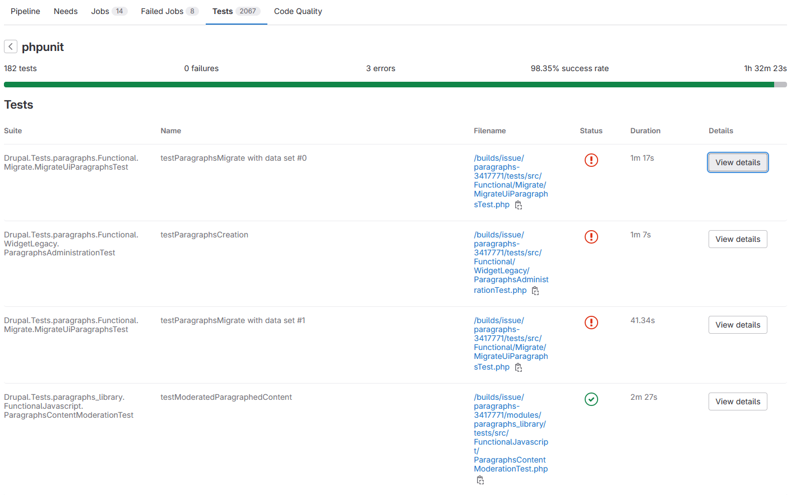Investigate fails: Artifacts
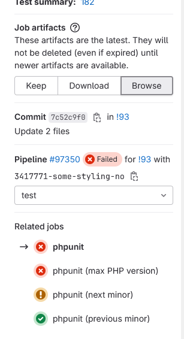Investigate fails: Artifacts
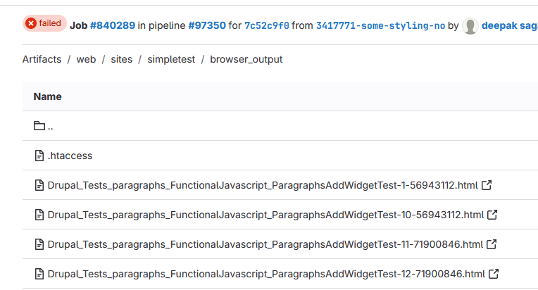Customize: Concurrent Test runs
Projects with more than a few tests: Use run-tests.sh with concurrency feature
variables:
_PHPUNIT_CONCURRENT: '1'
Customize: Test different Core and PHP versions
Use only what makes sense for your project
variables:
OPT_IN_TEST_PREVIOUS_MAJOR: 1
OPT_IN_TEST_PREVIOUS_MINOR: 1
OPT_IN_TEST_NEXT_MINOR: 1
OPT_IN_TEST_NEXT_MAJOR: 1
OPT_IN_TEST_MAX_PHP: 1
Alternative #1: Scheduled Pipelines
Alternative #2: Combine with manual execution
phpunit (next major):
when: manual
Scheduled Pipelines
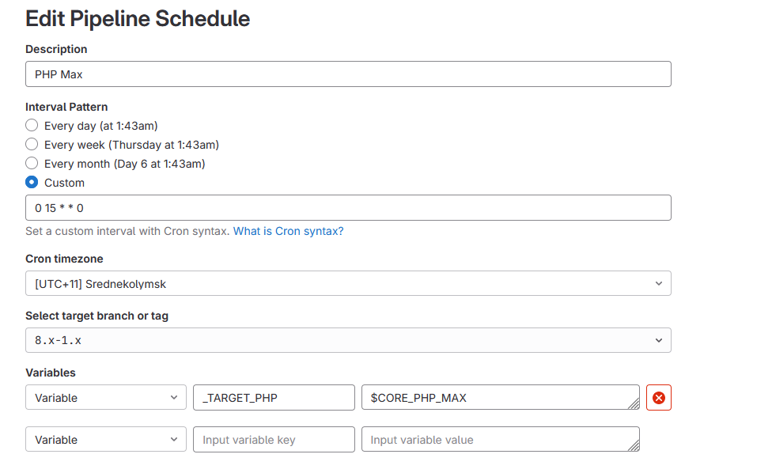Intermezzo: Gitlab E-mail & notifications
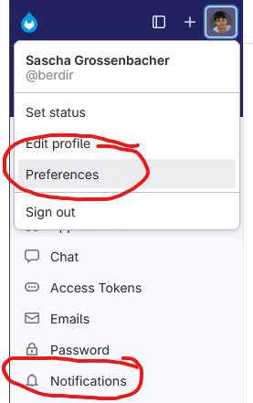
Check your e-mail in the Gitlab notification preferences and adjust notification settings
Customize: Additional services
Redis needs a redis server
phpunit:
services:
- !reference [ .with-database ]
- !reference [ .with-chrome ]
- name: redis:6
Customize: Composer dependencies and configuration
Everything in composer.json is merged into project composer.json
"name": "drupal/simplesamlphp_auth",
"config": {
"allow-plugins": {
"simplesamlphp/composer-module-installer": true
}
}
.composer-base:
before_script:
- composer require --dev predis/predis --no-update
Customize: Additional extensions/packages
Imagemagick needs extra packages
before_script:
- sudo apt-get update
- sudo apt-get install -y --no-install-recommends imagemagick
Redis needs the redis php extension
.phpunit-base:
before_script:
- apt-get update
- apt-get install -y --no-install-recommends $PHPIZE_DEPS
- pecl install redis && docker-php-ext-enable redis
Customize: Use your own image
Installing many packages and other system changes can be slow. A separate image is faster, but needs to be maintained
default:
image:
name: berdir/php-8.3-apache-extra:production
FROM drupalci/php-8.3-apache:production
RUN apt-get update && apt-get install -y ...
RUN pecl install redis && docker-php-ext-enable redis
Customize: Install JS libraries
DropzoneJS needs the Dropzone JS library
variables:
DROPZONE_VERSION: v5.9.3
.composer-base:
after_script:
- mkdir $_WEB_ROOT/libraries
- cd $_WEB_ROOT/libraries
- curl -L -o dropzone.zip --silent
https://github.com/dropzone/dropzone/releases/download/$DROPZONE_VERSION/dist.zip
- unzip dropzone.zip
- mv dist dropzone
Customize: Test different version
DropzoneJS also wants to run tests with Dropzone v6
composer (dropzone 6):
extends: .composer-base
variables:
DROPZONE_VERSION: v6.0.0-beta.2
phpunit (dropzone 6):
extends: phpunit
needs:
- "composer (dropzone 6)"
Customize: Test Matrix
Redis tests run with redis and relay extension and phpredis
phpunit:
parallel:
matrix:
- REDIS_INTERFACE:
- PhpRedis
- Predis
- Relay
Gitlab CI in Drupal core
- Extremely high level of parallel execution (12 minutes instead of 1h+ on DrupalCI)
- Test only job: Attempts to automatically detect changed/new tests and runs only those, expected to fail
- Various manual pipelines to test different PHP versions and database backends
Release management
Branches
- Old branch structure: 8.x-1.x (CORE.x-MAJOR.x)
- New semver: 1.x or 1.0.x (MAJOR.x, MAJOR.MINOR.x)
- Recommendation: Use 1.x, allows minor and patch releases: 1.0.0, 1.0.1, 1.1.0, ... from a single branch
- If necessary, a minor branch can still be created to e.g. create a 1.0.2 bugfix/patch release
Release series
- A release series for semver is a a minor release and its patch releases
- A release series can be supported and optionally recommended (green)
- A major branch can not be marked as a supported, only shows up on project page once you have a tag
- Recommendation: keep supported status for a longer period. Worst case scenario: "Having to" release a security fix for old release series.
Release Series UI
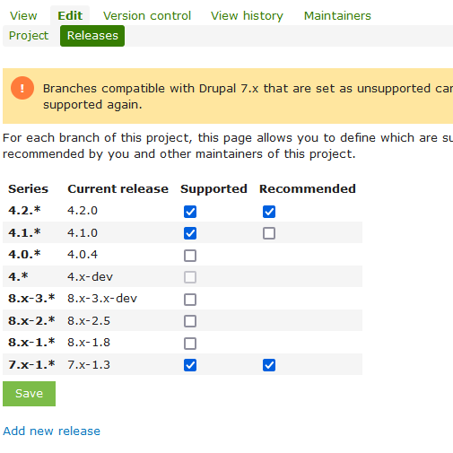Releases on project page
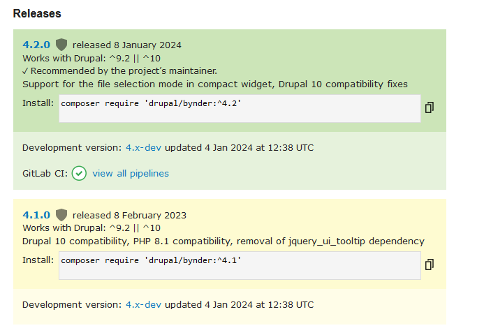When to release a minor release...
- New features (that may require attention)
- New/Raising requirements (new min core version, PHP version, other updated/new dependencies)
- Yes, requiring Drupal 9/Drupal 10 does not require a new major version of your module
When to release a major release...
- BC breaking changes in your own API
- I recommend doing this rarely: It can take years for a most or even a majority of the installations to switch
Commits & Credits
- Single commit per issue (and branch)
Issue #NUMBER by CONTRIBUTORS: DESCRIPTION- Contributors in commit message is no longer relevant for issue credits on drupal.org
- Review and adjust suggested issue credits. Consider removing credits for things like uploading patches from MR, screenshots of patch-applying.
Committing a merge request
- Using the dropdown & Merge button on the issue does a squash merge using the given commit message and is the recommended way to merge.
- Sometimes it fails, second attempt usually works unless the MR really doesn't apply.
Commits & Credits
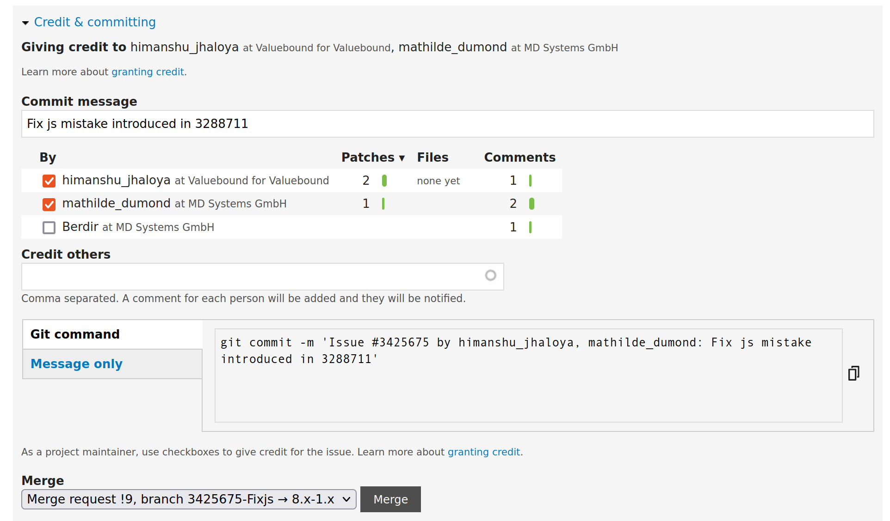Creating a release
- Include release notes, mention important changes
- drupalorg mrn by Matt Glaman creates a nice templates with linked issued and contributors
- Online version: drupal-mrn.dev
- Alias that calls drupal-mrn.dev for the two most recent tags: gist.github.com/Berdir/4719e45f7a686b8aa4c2383af690a54e